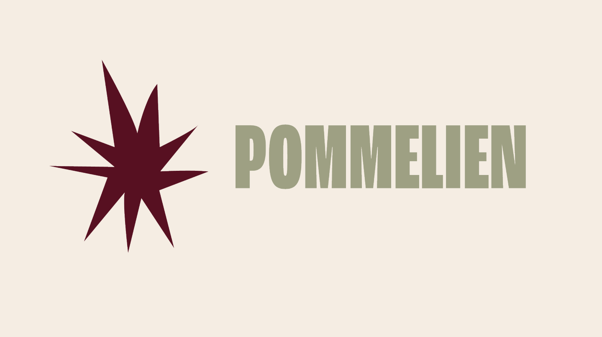
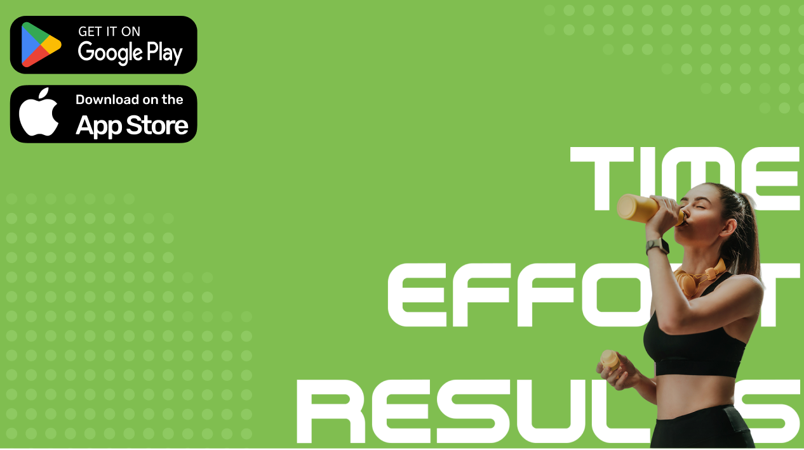
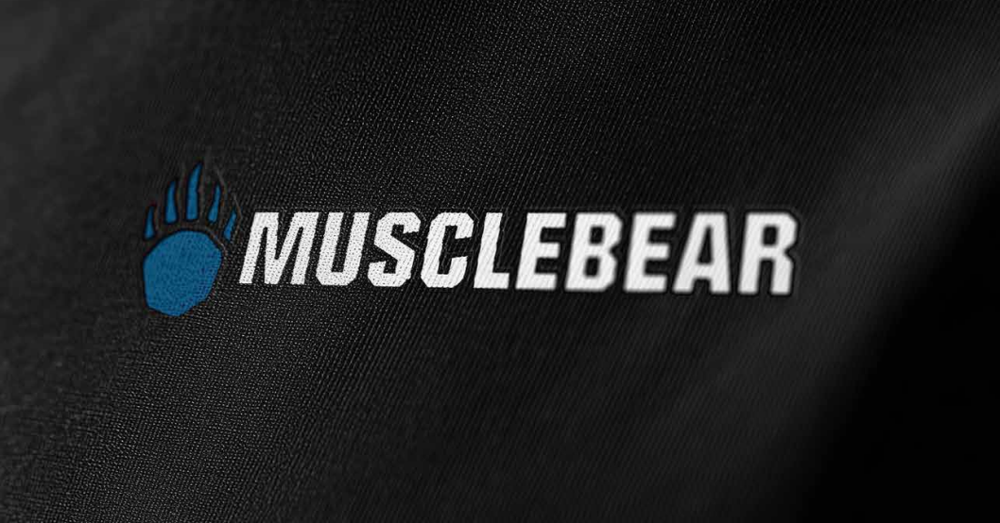
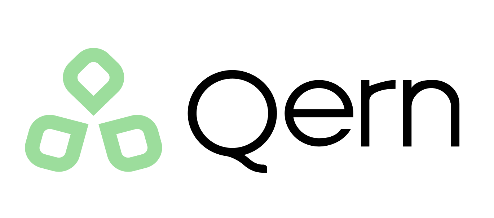

Pommelien Thijs — Rebranding
Vanuit een opdracht van MNM hebben we een volledige rebranding gedaan voor Pommelien Thijs, van marktonderzoek tot het maken van een brandguide.
IllustratorPhotoshopIndesignFigma
Ik maak professionele, goed ogende website designs en digitale assets. Momenteel studeer ik aan de PXL Hogeschool, waarbij ik momenteel leer over de workflow van digitale vormgeving.
Ik ben een eerstejaars student digitale vormgeving bij PXL Hogeschool in Hasselt. Mijn huidige passies zijn fotobewerking en design Waarbij ik deze twee graag samenbreng in grotere projecten zoals web design.
Buiten school bouw ik aan mijn fotoportfolio waarbij ik mijn foto's ook online beschikbaar zet. Naast fotografie ben ik ook al zeven jaar aan het werk waarin ik rollen zoals speeltuinopzichter, groendienst medewerker en magazijnier bekleed heb. Ik ben dus ook van nature goed geworden in open communicatie en teamwerk.
Momenteel ben ik opzoek naar een stageplek waarbij ik mijn kwaliteiten als digitale vormgever kan laten zien en kan groeien als persoon binnenin een sterk team.
Projecten van school en wat ik er van gemaakt heb.

Vanuit een opdracht van MNM hebben we een volledige rebranding gedaan voor Pommelien Thijs, van marktonderzoek tot het maken van een brandguide.

Feat is een fitnessapp waar gebruikers welkom zijn om zowel gewicht te verliezen als spiermassa bij te komen. Dit aan de hand van nauwkeurige resultaat tracking.

Vanuit een schoolopdracht moesten we een logo ontwerpen voor een nieuwe sportschool. Hierbij waren zowel Illustrator als Photoshop belangrijke vaardigheden.
Een overloping van onze opdracht voor werkplekleren 2 en het resultaat van mijn team.
Bezoek onze versie van de website van Qern hier

Voor WPL2 was onze case het rebranden van studiebureau Qern. Dit is een groot bedrijf dat het resultaat is van de merging van Enerdo en CreteQ. Met een 50 tal werknemers word dit bedrijf ingehuurd door andere bedrijven om te helpen met duurzaamheid en energie.
Met de case zelf kregen we creatieve vrijheid waarbij we wel eerst een marktonderzoek moesten doen naar zowel klanten als concurenten van Qern. Met de resultaten uit dit onderzoek konden we dan onze designs en stijlrichting onderbouwen. Verder kwam dan er dan ook nog de wens van Qern zelf bij, ze wouden namelijk dat bezoekers van de nieuwe site meer overtuigd werden om contact op te nemen met Qern.
Verspreid over drie sprints moest hier dus aan gewerkt worden. Met de uiteindelijke deliverables: een brandguide, een website en een voorstel van een app met een prototype. Na iedere sprint zouden we dan beoordeeld worden op onze resultaten en feedback krijgen van de klant zelf.
Vanaf het begin was het mij al duidelijk dat mijn team nood had aan iemand die het voortouw kon nemen met beslissingen en het team de juiste richting kon uitsturen. Na mezelf voor te stellen ben ik dan ook onmiddellijk aan de slag gegaan met het opzetten van een kanaal voor communicatie en het gericht doornemen van alle deliverables zodat ik teamgenoten die vast zaten met hun werk verder op weg kon helpen.
Voor de deliverables zelf heb ik alles voor de app gedaan en ook een groot deel van de website. Samen met een andere student van design hebben we het nieuwe brand een richting en doel gegeven.
Uiteindelijk heb ik veel bijgeleerd in Figma, Photoshop en Illustrator en is mijn groei met grafische vormgeving ook duidelijk terug te vinden in de eerdere versies van het project. Ik ben na dit project een stuk zekerder van mijn skills als designer en ben ook zeer enthousiast om aan de slag te gaan in het werkveld.
Door het overvloed van creativiteit heb ik ook een lange lijst van hobbies. Hier zijn er al enkele.
Ik doe aan dier, natuur en architectuur fotografie en trek er vaak op uit met mijn Canon 90D. Mijn favoriete foto's bewerk ik dan verder nog in Lightroom en plaats ik online zodat mensen deze gratis kunnen downloaden.
Ik maak allerhande tracks, van lo-fi tot alternatieve jingles en zet deze online voor andere mensen om te gebruiken in hun eigen projecten. Als je een fan bent van indie games en kortfilms is er een grote kans dat je al eens iets van mij gehoord hebt.
Ik ben een grote fan van sporten en heb dan ook al veel verschillende sporten gedaan. Momenteel is dit gewichtheffen en cardio.
Ik sta altijd open voor allerhande klusjes voor mijn familie. In de zomers ben ik vaak bezig met kleinere onderhoudsklussen van huizen en tuinen.
In de vakanties en weekends game ik wel eens graag. Vooral met vrienden online waarbij we de moeilijkste spellen met zijn allen onder de knie proberen te krijgen.
Door mijn Amerikaanse vriendin ben ik geregeld ook op reis, hierbij zoeken we de mooiste steden of natuurgebieden op.
Open voor graduaat positie, tewerkstelling of freelancing.